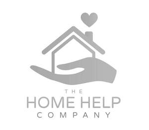

Trade Mark Journal No.2025/050 12 December 2025
UK00004305087 3 December 2025 (35,37,39,43,44,45)
Mark 1
Mark 2

- Class 35
- Advertising; business management; business administration; office functions; Assistance in franchised commercial business management; Franchising services providing business assistance; Business assistance relating to franchising; Administration of the business affairs of franchises; Advisory services relating to the operation of franchises; Services rendered by a franchisor, namely, assistance in the running or management of industrial or commercial enterprises; Assistance in business management within the framework of a franchise contract; Providing assistance in the field of business management within the framework of a franchise contract; Business advice relating to franchising; Business advertising services relating to franchising; Advertising services; Marketing services; Publicity services; Commercial information services; Business information services; Business consultancy services; Retail services, wholesale services, mail order services, online retail services connected with the sale of clothing, footwear, headwear, uniforms, cleaning products, cleaning articles, cleaning utensils, personal protective equipment, safety equipment, personal protective clothing, safety clothing; Information relating to the aforesaid; Advice relating to the aforesaid; Consultancy services relating to the aforesaid.
- Class 37
- Cleaning services; Cleaning of property; Domestic cleaning services; Cleaning of domestic premises; Housekeeping services [cleaning services]; Property maintenance; Information relating to the aforesaid; Advice relating to the aforesaid; Consultancy services relating to the aforesaid.
- Class 39
- Transport; Taxi transport; Car transport; Passenger transport; Transport services; Transport of persons; Transport of goods; Arranging of transport; Information relating to the aforesaid; Advice relating to the aforesaid; Consultancy services relating to the aforesaid.
- Class 43
- Preparation of food and beverages; Provision of food and drink; Temporary accommodation; Information, advice and reservation services for the provision of food and drink; Nurseries, day-care and elderly care facilities; Information relating to the aforesaid; Advice relating to the aforesaid; Consultancy services relating to the aforesaid.
- Class 44
- Medical services; veterinary services; hygienic and beauty care for human beings or animals; agriculture, horticulture and forestry services; Advisory services relating to healthcare; Health advice; Health consultancy; Health information services relating to Pilates; Home-visit nursing care; Provision of health care services in domestic homes; Gardening; Human healthcare services; Healthcare information services; Healthcare advisory services; Health-care services; Beauty care services; Nursing care services; Cosmetic body care services; Provision of hygienic and beauty care services; Gardening advice; Gardening services; Horticulture, gardening and landscaping; Providing information about gardening; Information relating to the aforesaid; Advice relating to the aforesaid; Consultancy services relating to the aforesaid.
- Class 45
- Companionship services for the elderly and disabled; Personal shopper services; Licensing of franchise concepts; Pet sitting; Chaperoning; Safety evaluation; Information relating to the aforesaid; Advice relating to the aforesaid; Consultancy services relating to the aforesaid.
THHC GROUP LTD
Representative: Brand Protect Limited